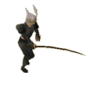
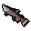
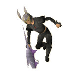

")
Fishing - Barbarian Fishing
Getting Started
To start Fishing in the manner of the barbarians, you must have a Fishing level of 48, and Strength and Agility levels of 15.
Click here to find out how to start learning barbarian training methods.
Heavy Rod Fishing

One of the first tasks Otto Godblessed will set you is to use the rod that he keeps under his bed to catch one of the fish in the lake to the east of his hut. These fish are more difficult to catch than you might expect, as they leap about in the water and use their impressive vigour to fight against the pull of the fishing rod.
Because of the nature of these fish, you will find that you need more than just an angler's cunning, and you will need use the weight of the rod and your reflexes to catch them. In this way, fishing with the heavy rod will earn experience in Fishing, Strength and Agility.
You will need to use bait to catch the fish in the lake, and you may use any of the following:
- Bait
- Feather
- Fish parts
- Roe
- Caviar
If you lose the heavy rod you need to catch these fish, you can find another by searching Otto's bed. Fishing spots for the fish below can only be found in the lake next to Otto's hut.
| Fish | Fishing Level Required |
Other Levels Required | Fishing Experience | Strength & Agility Experience |
 Leaping trout |
48 |
15 15 |
50 | 5 |
|  Leaping salmon |
58 |
30 30 |
70 | 6 |
 Leaping sturgeon |
70 |
45 45 |
80 | 7 |
Fishing Without a Harpoon

One of the more impressive feats barbarians have learnt is the ability to use their own arm as bait for larger fish, and then using that same arm to wrestle the fish out of the water. It takes a bold fisherman to thrash their arm about, waiting for a shark to come close...
You need a Fishing level of 55 and a Strength level of 35 to begin Fishing without a harpoon.
| Fish | Fishing Level Required |
Strength Level Required |
Fishing Experience | Strength Experience |
 Tuna |
55 |
35 |
80 | 8 |
 Swordfish |
70 |
50 |
100 | 10 |
 Shark |
96 |
76 |
110 | 11 |

More articles in
Fishing
|
|
|
Further Help
If this article does not help you, you may find the following sections of the RuneScape site helpful:
|
|